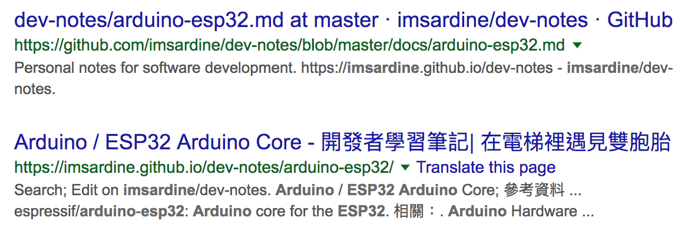

GitHub / Pages #
- GitHub Pages | Websites for you and your projects, hosted directly from your GitHub repository. Just edit, push, and your changes are live.
- Websites for you and your projects. Hosted directly from your GitHub repository. Just edit, push, and your changes are live.
- You get one site per GitHub account and organization, and unlimited project sites. 分為 3 種 user/organization 及 project
- What is GitHub Pages? - User Documentation
- GitHub Pages is a STATIC SITE HOSTING SERVICE designed to host your personal, organization, or project pages directly from a GitHub repository.
- GitHub Pages is a static site hosting service and doesn’t support server-side code such as, PHP, Ruby, or Python.
Usage Limits ?? #
- Usage Limits - What is GitHub Pages? - User Documentation #ril
- GitHub Terms of Service - User Documentation #ril
新手上路 ?? #
User, Organization, Project Pages ?? #
- 由於 user/organization site 的
masterbranch 被拿去做為網頁的內容，可以考慮將 source 放在sourcebranch；再者mastermaster 的 history 根本不重要。
參考資料：
- GitHub Pages | Websites for you and your projects, hosted directly from your GitHub repository. Just edit, push, and your changes are live.
- User site 跟 organization site 的做法相同；先建立名為
NAME.github.io的 repo，其中NAME可以是 username 或是 organization name，再把內容寫在masterbranch，就可以在 https://.github.io 或 https:// .github.io 看到內容。 - Project site 要在 Settings > GitHub Pages 選定網站內容來自哪個 branch，預設是 None，可以選擇
masterbranch 或master branch /docs folder，然後就可以在 https://.github.io/ 或 https:// .github.io/ 看到內容；這裡完全沒提到 gh-pagesbranch。
- User site 跟 organization site 的做法相同；先建立名為
- Configuring a publishing source for GitHub Pages - User Documentation
- 就 user page 跟 organiation page 而言，repository 一定是
<username>.github.io或<orgname>.github.io，而且內容只能來自masterbranch。 - Project page 的內容來源就比較多選擇，可以是
master、gh-pagesbranch，或是masterbranch 下的/docs子資料夾。 - Default source settings for repositories without the username naming scheme 應該是呼應下面 “not follow the repository naming scheme
.github.io or .github.io” 的說法，種情況下才會有 master或gh-pages的選擇；當然gh-pagesbranch 的選項要 repo 裡有這個 branch 時才會出現，不過masterbranch 與masterbranch /docs folder 這兩個選項固定存在 (能不能選是一回事)
- 就 user page 跟 organiation page 而言，repository 一定是
- User, Organization, and Project Pages - User Documentation
- Site 被歸為 2 類 project pages site 或 user/organization pages site，兩者間有些微的差異；主要是內容的來源。
- Project pages site 附加在某個 project 下，所以內容來自同一個 repo 的 branch，但 user/organization pages site 有自己的 repo，所以只能來自
masterbranch。 - If the URL for your GitHub Pages site contains a username or organization name that begins or ends in a dash, or contains consecutive dashes, then people browsing with Linux will receive a server error when they visit the site. 感覺是 hostname 不能以
-開頭或結尾，也不能有連續的-?
- Simpler GitHub Pages publishing | The GitHub Blog (2016-08-17)
- 當 repository 專用於 website content 時用
masterbranch，而docs/資料夾的用法，則可以讓 code 跟 documentation 維護在同一個 branch 裡，好處是一個 PR 可以同時包含 code 與 documentation 的修改。 - 不過上述
docs/的好處，只適合搭配 GitHub 內建的 generator (Jekyll) – publish from the/docsfolder，若要用其他方式產生網站內容，就得採用同一 repository 的gh-pagesbranch 或是另一個 repository 的masterbranch。
- 當 repository 專用於 website content 時用
- Unpublishing a User Pages site - User Documentation 由於 user/organization site 的內容來自
masterbranch，所以把masterbranch 刪除，或是將 repository (<username>.github.io`) 刪除；猜想將 repository 更名也可以? - Unpublishing a Project Pages site - User Documentation 把
gh-pages/masterbranch 刪除即可 #ril
Build ?? #
- Building User and Organization Pages sites - User, Organization, and Project Pages - User Documentation
- 這裡的 build 指的是產生內容並推回 repo? 上面的 Building Project Pages sites 沒提到如何自動化??
- User Pages sites 提到 They can also use DEPLOY KEYS to automate the process.
- Organization Pages sites 提到 To automate builds, you can set up a MACHINE USER as a member of your organization. … Deploy keys aren’t supported for Organization Pages sites.
Custom Domain ?? #
- Quick start: Setting up a custom domain - User Documentation #ril
- Using a custom domain with your Project Pages site - User, Organization, and Project Pages - User Documentation 一樣分 user/organization site 與 project site 來看
- User/organization site 採用 custom domain 後，也可以在 – the custom domain REPLACES username.github.io in the URL for all Project Pages sites hosted under that account.
- Project Pages sites that use a custom domain are ALSO AVAILABLE at
username.github.io/projectnamefor personal accounts, andorgname.github.io/projectnamefor organizations. 是指採用 custom domain 後，在 https://xxx.github.io/還是看得到內容?
- Faster, More Awesome GitHub Pages | The GitHub Blog (2014-01-07) #ril
- Using a custom domain with GitHub Pages - User Documentation #ril
- What is GitHub Pages? - User Documentation 提到 2016-07-15 採用
github.iodomain 的 site 走 HTTPS，但在之前的 site 要另外啟用 HTTPS。 - Securing your GitHub Pages site with HTTPS - User Documentation #ril
- Using a custom domain with GitHub Pages - User Documentation #ril
- Custom domain redirects for GitHub Pages sites - User Documentation #ril
- Troubleshooting custom domains - User Documentation #ril
Custom 404 Page ?? #
Cache ?? #
- javascript - Determining a page is outdated on github pages - Stack Overflow 提供的靜態網頁有 cache 時間過長的問題? #ril
Google Ads ?? #
- Can I put Google Adsense Ads on a website hosted on GitHub Pages? - Quora https://www.quora.com/Can-I-put-Google-Adsense-Ads-on-a-website-hosted-on-GitHub-Pages Matt Auckland: GitHub 的人提到，加上廣告、捐款等為專案賺錢的東西，都是可以接受的。WebJeda: Google 並沒有針對任何 hosting 禁止，一開始會有一個空白處，大概 2 週後就開始有廣告進來。
- Am I allowed to host a commerical website on Github Pages? - Web Applications Stack Exchange (2017-03-24) https://webapps.stackexchange.com/questions/56898/ gman: TOS 裡的 “Advertising on GitHub” 提到，不會禁止在 GitHub 上打廣告，但還是有些限制以避免 GitHub 成為 spam haven；不過這裡比較偏 GitHub repository 而非 GitHub Pages。
- AdSense on sub/domain I don’t own? (Github pages) - Google Product Forums (2016-08-06) https://productforums.google.com/forum/#!topic/adsense/M01sopwmJ-k GitHub Pages 的網址輸入後出現 URL must not have a path (example.com/path) or subdomain (subdomain.example.com)。galeksic: “the URL that you provide must be a domain that you own, and must not be a webpage or directory, or contain any parameters” 所以 GitHub Pages 要採用 custom domain 才可以。
GitHub Pages 可以放商業網站嗎 ?? #
- Am I allowed to host a commerical website on Github Pages? - Web Applications Stack Exchange https://webapps.stackexchange.com/questions/56898/ Lasse V. Karlsen: 一開始 TOS 有提到 “to host your company pages”，nii236：後來這一段字被拿掉，當然你也可以把 organization 解釋成 company。2017 gman: 限制 GitHub Pages 不能超過 1G，每月流量 100GB，若超過會收到 GitHub Support 的來信，建議在前面加個 CDN 或是移到其他 hosting service。
搜尋引擎不要爬 GitHub Pages 的內容 ?? #

不知為何 User/Organization Pages 沒有這個問題 (可能是 master branch 直接放 HTML source 的關係?)，不過 Project Pages 確實有這個問題。
這要分兩個部份來看 – GitHub repo 跟 GitHub Pages，雖然都跟 robots.txt 有關，但前者由 https://github.com/robots.txt 控制，我們無權修改，但後者透過自訂 robots.txt 是可以解的。
$ curl https://github.com/robots.txt 2>/dev/null | grep 'User-agent: Googlebot' -A 2
User-agent: Googlebot
Allow: /*/*/tree/master
Allow: /*/*/blob/master
也就是說，就 GitHub repo 的問題而言，不要把 source 放 master branch 就好。
至於 Project Pages 則可以在 User Pages 下自訂 https://username.github.io/robots.txt：
User-agent: *
Disallow: /my-project1/
Disallow: /my-project2/
參考資料：
-
robots.txt - How to stop Google indexing my Github repository - Stack Overflow
- szabgab: What happens in the case of Github Pages? Those are sites where the source is in a Github repository. Do they have the same problem of duplication? 若 Google 去爬 GitHub repo，結果就會有兩份。
- szabgab: The https://github.com/robots.txt file of GitHub allows the indexing of the blobs in the ‘master’ branch, but restricts all other branches. So if you don’t have a ‘master’ branch, Google is not supposed to index your pages. 可以利用
robots.txt規範只爬masterbranch 的特性，示範另建 branch 再刪master的做法：git checkout -b main git push -u origin main git branch -d master git push origin :master
-
robots.txt - Stopping index of Github pages - Stack Overflow
-
olavimmanuel: You can use a
robots.txtto stop indexing of your users GitHub Pages by adding it in your User Page. Thisrobots.txtwill be the activerobots.txtfor all your projects pages as the project pages are reachable as subdirectories (username.github.io/project) in your subdomain (username.github.io). 從 user page 下手，因為 project pages 只是 user page 的子目錄。To block robots for one projects GitHub Page:
User-agent: * Disallow: /projectname/
-